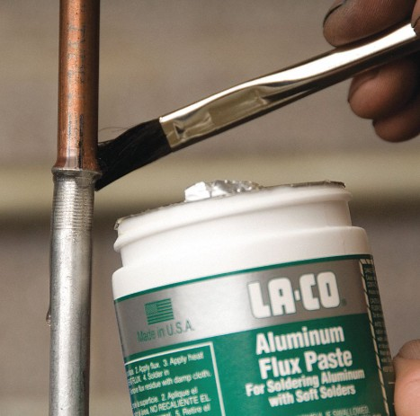

¿Qué es la Soldadura con Estaño?
La soldadura con estaño es la base de todas las aplicaciones electrónicas porque permite
la realización de conexiones entre conductores y entre éstos y los diversos componentes,
obteniendo de forma rápida la máxima seguridad de contacto.
La soldadura con estaño consiste en unir las partes a soldar de manera que se toquen y
cubrirlas con una gota de estaño fundido que, una vez enfriada, constituirá una verdadera
unión, sobre todo desde el punto de vista electrónico.
El operario soldador de estaño debe dominar la práctica ya que es una tarea manual delicada.
En este tipo de soldadura es imprescindible la habilidad para soldar con efectividad ya que
influye directamente en el buen funcionamiento del montaje y en el tiempo de vida útil.
Una soldadura mal hecha puede causar que el producto falle en algún momento.
¿Qué Necesito para Soldar Componentes Electrónicos?
Al soldar un conector electrónico a un punto de contacto (a menudo llamado "almohadilla"),
por lo general se necesita lo siguiente:
- Un soldador capaz de alcanzar el punto de fusión del estaño
- Estaño de alambre con núcleo de fundente
- Fundente adicional si es necesario para trabajos complejos
El Soldador
Un soldador es una herramienta manual que se usa para unir metales derritiendo estaño.
En electrónica se suelen utilizar soldadores de potencia reducida (15W a 30W) ya que los
trabajos a realizar son de una cierta magnitud de detalles y bastante delicados.
Está compuesto por:
- Una punta metálica que transfiere el calor
- Un elemento calefactor que calienta la punta
- Un mango aislante para manipularlo con seguridad
- Un cable que se conecta a una fuente de energía
La punta tiene núcleo de cobre para buen calor, recubrimiento de hierro para protección
y capa de cromo-níquel para evitar que se pegue el estaño donde no debe.

Componentes principales de un soldador
Tipos de Soldadores
Tipo Lápiz
Tiene una potencia de 30W. Su calentamiento es permanente y posee una alta inercia térmica.
Tanto en el momento de la soldadura como en las pausas de esta labor, el soldador deberá
permanecer conectado a la corriente eléctrica. Resulta adecuado para trabajos repetitivos y numerosos.
Tipo Pistola
La punta se calienta por el efecto de una gran corriente que pasa por ella, el abultado mango
lleva dentro un transformador que la produce. Resulta útil para trabajos esporádicos ya que
se calienta instantáneamente. No se usa mucho en electrónica porque la punta no suele ser lo
bastante fina y precisa para este tipo de trabajos.

Soldador tipo lápiz - Ideal para electrónica

Soldador tipo pistola - Para trabajos esporádicos
Soportes para el Soldador
El soldador mantiene la punta caliente durante todo el tiempo que esté conectado a corriente
eléctrica, entre unos 250 a 300°C, por lo que se hace necesario el uso de un soporte donde
apoyarlo en el tiempo que no se usa de forma manual por el operador para evitar quemar la mesa de trabajo.
- Soporte con esponja: Es el soporte típico para los soldadores que tienen poca potencia.
- Soporte JBC: Permite colocar el soporte de dos formas distintas. Este tipo de soporte también cuenta con la esponja.
- Soporte sencillo: Puede construirse con un trozo de chapa y una tabla de madera.

Soporte con esponja para soldador
¿Qué Tipo de Estaño Debo Usar?
Para electrónica, elige estaño de alambre delgado con núcleo de fundente.
El término "estaño" se emplea de forma incorrecta ya que se trata de una aleación de este metal.
Diámetro del alambre:
- Usa alambre fino (entre 0.5 mm y 1.5 mm) para componentes pequeños en placas electrónicas.
Tipo de fundente:
- Sin limpiar (No-clean): Ideal para la mayoría de proyectos. Los residuos no son dañinos y puedes dejarlos en la placa.
- Activo (RA): Muy efectivo, pero debes limpiar los residuos después para evitar corrosión.
- Soluble en agua (OA): Muy potente, pero es fundamental limpiarlo después porque es corrosivo.
Composición del estaño: El estaño para soldar contiene resina (pasta de soldar)
en una proporción del 2 al 2.5% dentro de las cavidades del hilo. La resina facilita la distribución
uniforme del estaño, evita la oxidación y resulta una gran ayuda durante el proceso de soldadura.
¿Qué es el Fundente?
Es un preparador químico que limpia los metales de la oxidación y permite que el estaño
se adhiera correctamente (lo que se llama "humectación").

Diferentes tipos de fundente para soldadura
¿Qué tipo de fundente debo usar?
- Sin limpiar (No-clean): El más común y práctico. Puedes dejar los residuos en la placa sin problemas.
- Activo (RA): Muy efectivo, pero debes limpiar los residuos después para evitar corrosión.
- Soluble en agua (OA): Muy potente, pero es fundamental limpiarlo porque sus residuos son corrosivos.
Consejo: Para la mayoría, el fundente "sin limpiar" es la mejor opción. Solo usa los otros si es necesario
y estás dispuesto a limpiar la placa después.
¿Necesito añadir fundente adicional?
Para uniones simples (como dos cables), el fundente del interior del alambre de estaño es suficiente.
Solo necesitarás añadir más si realizas trabajos complejos, como soldar varios puntos muy juntos.
Aplica una pequeña cantidad extra con un pincel o aplicador, ya que el exceso deberá limpiarse después.
¿Cómo Soldar con Estaño?
Antes de empezar:
- La punta del soldador debe estar limpia. En ningún caso se raspará la punta con una lima, goma de borrar, tijeras o similar.
- Las piezas a soldar deben estar totalmente limpias y a ser posible preestañadas.
- Utiliza un soldador de la potencia adecuada (15W a 30W).
Acercar los elementos a unir hasta que se toquen. Si es necesario utiliza alicates para sujetar ambas partes.
Aplicar el soldador a las partes a soldar, de forma que se calienten ambas partes (menos de 3 segundos).
Sin quitar el soldador, aplicar el estaño a la zona de la soldadura, evitando que la punta toque directamente el estaño.
La resina del estaño, al tocar las superficies calientes, se distribuye por la superficie de la soldadura.
El estaño fundido se distribuye por la superficie que se va a soldar.
Retirar el soldador, tratando de no mover las partes de la soldadura. Dejar que se enfríe naturalmente.
El metal fundido se solidifica, quedando la soldadura finalizada, con aspecto brillante y con buena resistencia mecánica.

Pasos para realizar una soldadura correcta con estaño
¿Cómo diferenciar una buena soldadura de una mala?
- Buena soldadura: La unión es lisa y brillante, cubre toda el área de contacto y el componente queda firme.
- Mala soldadura (soldadura fría): El estaño forma bolas, no cubre bien la superficie, hay hilos o puentes entre conexiones, o el componente se mueve.

Ejemplo de soldadura correcta

Ejemplo de soldadura incorrecta (soldadura fría)
Selección y Mantenimiento de la Punta de Soldadura
¿Cómo selecciono la mejor punta de soldadura?
Elija una punta cuya forma y tamaño coincidan con la zona a soldar para transferir calor eficientemente.
- Punta demasiado grande: Calienta lento y puede dañar componentes cercanos.
- Punta demasiado pequeña: Transfiere calor inefficientemente y aumenta el riesgo de daño.
Tipos de puntas más comunes:
- Cincel o destornillador: Punta plana. Ideal para componentes pasantes y uso general.
- Puntiaguda o cónica: Punta fina. Perfecta para trabajos de precisión en componentes pequeños.
- Hoja o cuchilla: Punta alargada. Diseñada para soldar varias conexiones a la vez (técnica de arrastre).

Diferentes tipos de puntas para soldar
Consejo: Use siempre puntas diseñadas específicamente para electrónica.
Temperatura de soldadura
No es recomendable usar temperatura máxima. Aunque se trabaje más rápido, el exceso de calor:
- Acorta la vida útil de la punta
- Puede dañar los componentes de la placa
La temperatura ideal para soldadura con estaño está entre 200-400°C dependiendo de la aleación.
¿Por qué el estaño gotea de la punta?
Esto indica que la punta está sucia ("punta fría"). Cuando se acumulan residuos de fundente y oxidación:
- El calor no se transfiere correctamente
- El estaño no se adhiere a la punta
- En lugar de fluir, el estaño forma gotas y cae
La solución es limpiar bien la punta del soldador.
Limpieza y Mantenimiento del Soldador
¿Cómo limpiar un soldador?
Limpieza diaria:
- Use una esponja de celulosa húmeda (exprimida) o una almohadilla de latón
- Pase la punta caliente para remover exceso de estaño y fundente

Métodos para limpiar la punta del soldador
Cuando la punta está muy sucia (negra):
- Use un limpiador especial ("tip tinner")
- Enrolle la punta caliente en el limpiador hasta que quede plateada y brillante
- Limpie el exceso con la esponja
Advertencias:
- No use esponjas sintéticas (se derriten)
- Evite las barras de pulir (dañan la punta)
- Si la punta tiene hoyos, cámbiela
Esponja vs Almohadilla de Latón:
Esponja:
- Ventaja: Limpia rápido y bien
- Desventaja: Enfría la punta y puede dañarla si está muy húmeda
- Consejo: Use esponja de celulosa natural, apenas húmeda
Almohadilla de latón:
- Ventaja: No enfría la punta
- Desventaja: Es abrasiva y puede rayar la punta
- Consejo: Use movimientos suaves de "pinchar"
Al terminar de soldar:
- Limpie la punta
- Aplique una capa fina de estaño nuevo antes de guardar
- Esto protege la punta de la oxidación
Para alargar la vida de la punta:
- Use la temperatura mínima necesaria
- Limpie la punta regularmente
- Apague el soldador cuando no lo use
- Aplique estaño nuevo antes de guardar
¿Cuándo cambiar la punta?
- Si está negra pero se puede limpiar: úsela
- Si tiene hoyos o corrosión: cámbiela
Para evitar corrosión en la PCB:
- Limpie los residuos de fundente después de soldar
- Use limpiador especial y cepillo suave
- Incline la placa para que escurran los residuos
Técnicas de Desoldadura
Desoldador de pera
Consta de una punta, un depósito para el estaño absorbido, una espiga para adaptarlo al
soldador y una pera de goma que sirve para hacer el vacío.
Presionar la pera con el dedo.
Acercar la punta hasta la zona de donde se quiera quitar el estaño.
Derretir el estaño con la punta del soldador y, en ese momento, soltar la pera para que absorba el estaño.
Vaciar el depósito presionando la pera un par de veces sobre un papel o el soporte (con cuidado, el estaño sale a alta temperatura).
Desoldador de vacío o chupón
Es una bomba de succión que consta de un cilindro con un émbolo accionado por un muelle.
Tiene una punta de plástico resistente al calor y un depósito de aluminio.
Cargar el desoldador presionando el pulsador de carga.
Aplicar la punta del soldador para derretir el estaño.
Acercar la punta del chupón y pulsar el botón de accionamiento para absorber el estaño.
Repetir si es necesario.

Desoldador de pera

Desoldador de vacío o chupón
Cómo Aprender a Soldar con Estaño
Aprender a soldar con estaño es una tarea ardua puesto que requiere de mucho tacto manual,
pulso y experiencia. Una de las mejores maneras de aprender es realizar un curso de soldadura
con estaño de forma gratuita vía online o buscar un curso especializado para que te ofrezca
el temario completo necesario, la práctica y puedas adquirir las habilidades necesarias para
este tipo de soldadura tan delicada y tan demandada en el mundo laboral.
Consejo: La práctica constante es fundamental. Comienza con proyectos simples
y ve aumentando la complejidad gradualmente.
Galería de Imágenes
Soldadura correcta
Unión lisa y brillante que cubre completamente el área de contacto
Soldadura incorrecta
Soldadura con forma de bola y sin cubrir bien la superficie

Soldadura de Mont
Consejos Básicos de Soldadura
Superficies Limpias
Trabaje siempre sobre superficies limpias para asegurar una buena adherencia del estaño.
Tamaño Adecuado
Use la punta y estaño del tamaño adecuado para cada trabajo específico.
Punta Limpia
Mantenga la punta limpia y bien estañada para una transferencia de calor óptima.
Calor Controlado
Aplique calor suficiente pero no excesivo para evitar daños en componentes.
Limpieza Final
Limpie la placa después de soldar para eliminar residuos de fundente corrosivos.
Práctica Constante
La soldadura es una habilidad que mejora con la práctica regular.
Volver a la Página Principal